需求在探索中形成
用户最初往往只知道"想出去玩"或"想轻松一点"，需要在浏览内容中逐步明确目的地、景点、节奏与偏好。
01 · 产品概览
从模糊想法到完整路线的个性化 AI 旅行规划助手
面向旅行规划场景，小迹通过对话帮助用户梳理旅行需求，并根据用户偏好生成个性化路线。方案生成后，用户仍可继续与 AI 协作调整行程，直到获得更适合自己的旅行计划。
2026.05 – 2026.06
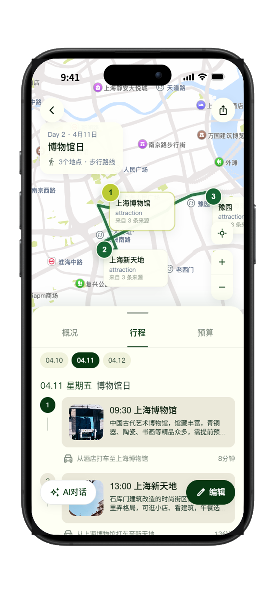
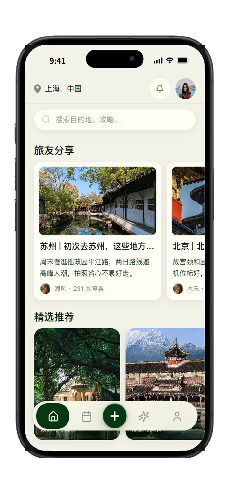
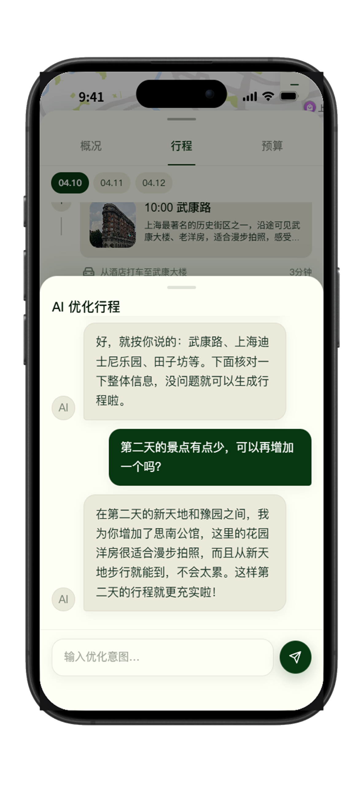
旅行计划不是一次输入生成答案，而是边探索、边判断、边修改的过程。
用户最初往往只知道"想出去玩"或"想轻松一点"，需要在浏览内容中逐步明确目的地、景点、节奏与偏好。
景点种草、攻略内容、地图位置与路线安排散落在不同平台，用户必须反复切换并手动整理。
传统 LLM 可以快速生成路线，但结果容易偏大众化，难以体现节奏、兴趣与同行需求。
大段文字方案难以看到地点与路线关系，也难以只修改某一天或某一个地点。
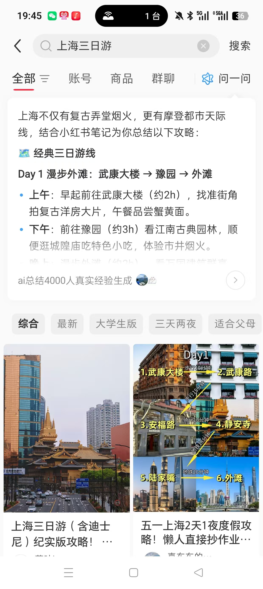
提供真实灵感与经验内容，但路线整理、地点验证与日程安排仍依赖用户手动完成。
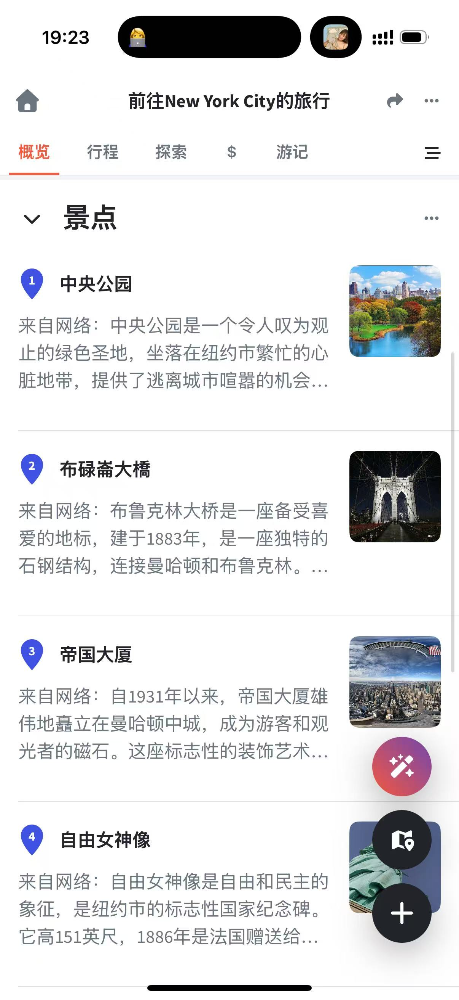
地图、清单和行程组织能力较完整，但需要用户先明确需求，AI 个性化规划较弱。
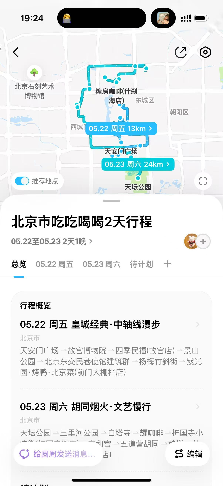
适合记录与组织行程，但更偏“行程容器”，对模糊需求澄清与偏好理解有限。
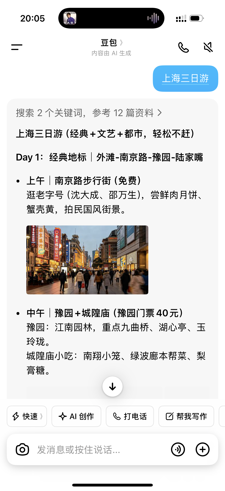
可以快速生成文字行程，但缺少地图验证、结构化编辑与稳定的个性化偏好记忆。
旅行需求在探索中形成，用户需要被引导，而不是直接填写完整答案。
通过问答逐步确认目的地、天数、预算、同行人和偏好。
部分用户已知道目的地和日期，希望更快进入生成结果。
提供结构化表单入口，快速提交旅行信息并生成路线。
同一目的地的路线常常相似，难体现用户节奏与兴趣差异。
用旅行人格和偏好标签参与路线生成，提升个性化稳定性。
用户难判断地点关系，也不想为了改一天重生成整份方案。
展示点位与路线关系，并支持 AI 调整和手动编辑。
首页明确 AI 旅行规划能力，引导用户选择规划方式。
想法不清晰走 AI 对话，需求明确则直接填写信息。
结合偏好生成每日安排，并通过地图查看点位与路线。
支持 AI 优化或手动编辑，最终保存为可查看行程。
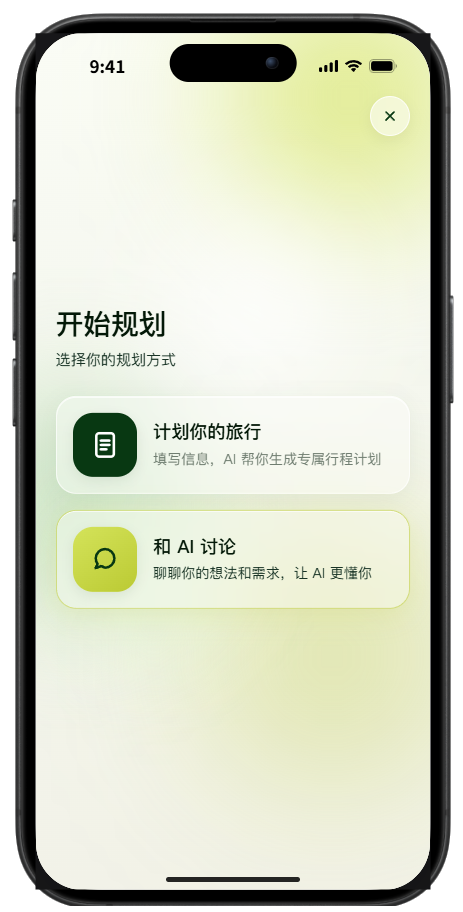
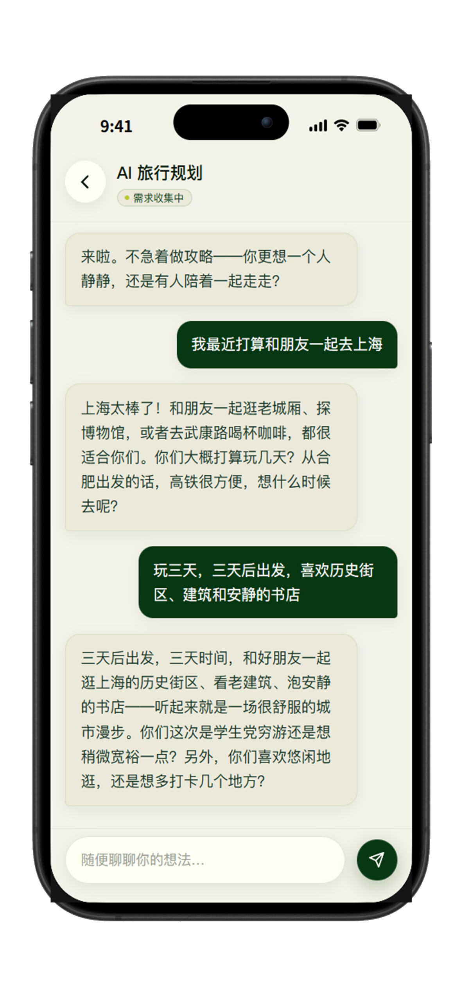
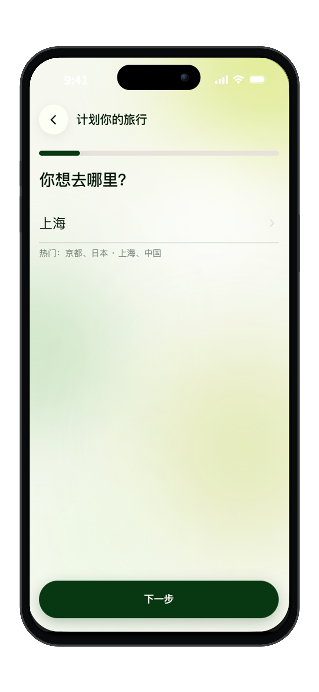
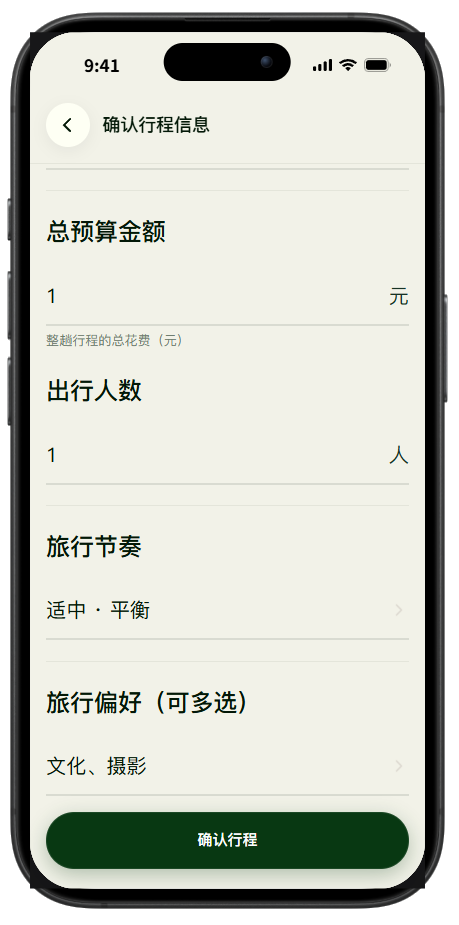
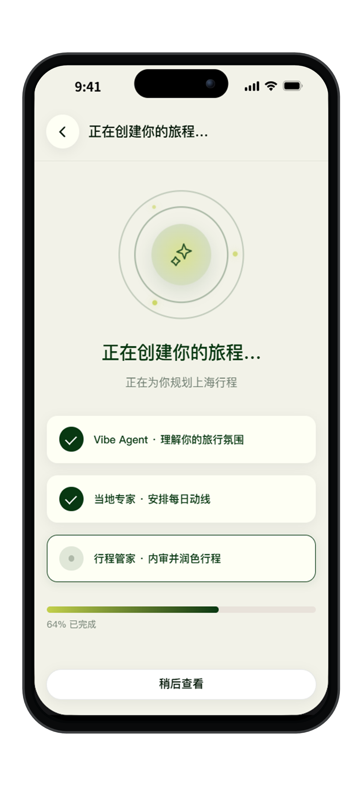
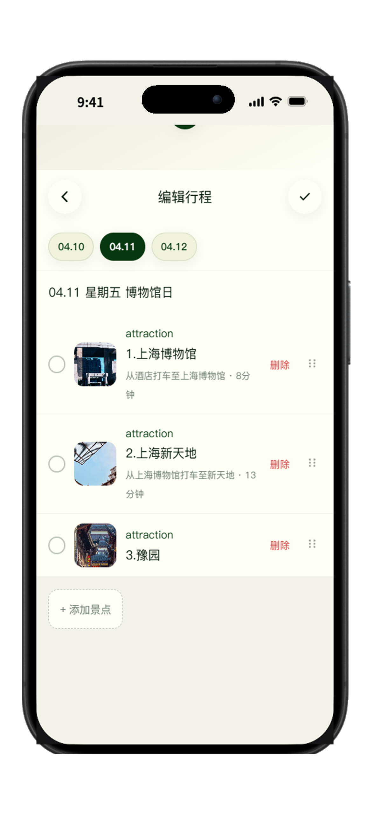
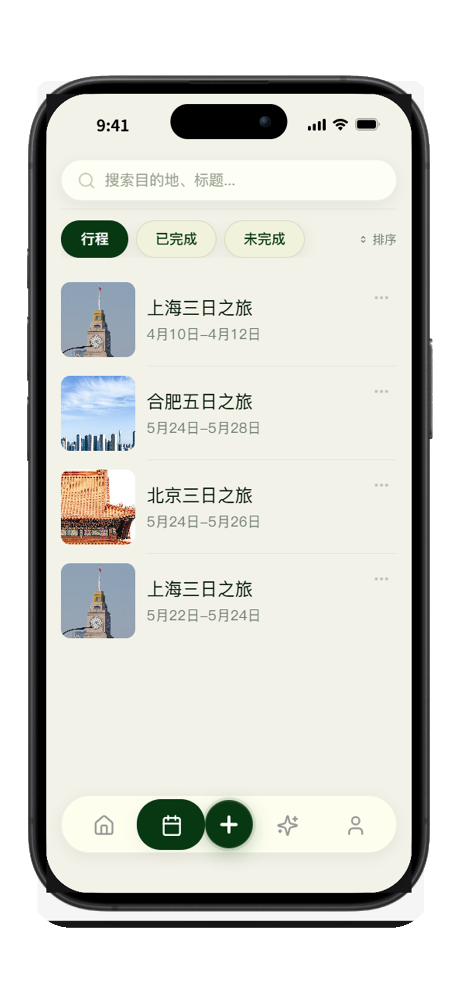
从用户输入到局部调整，明确 DeepSeek 模块与高德地图之间的调用关系。
AI 调整路径：用户在已有行程上提出局部修改，前端携带当前方案与修改指令调用 DeepSeek，返回更新后的局部行程，再同步到地图与日程展示。
用户描述想法 → LLM 理解需求 → 个性化生成 → 地图验证与 Tips → 持续调整。
将用户自然语言和偏好标签转成结构化旅行需求 JSON。
根据需求 JSON 与 POI / 地图信息，生成 Day-by-Day 行程。
根据当前方案和修改指令，输出更新后的局部行程。
20 题 / 约 3 分钟，从 6 个维度生成 16 种旅行人格，路线与标签会参与不同旅行人格的个性化路线定制。
每日景点数量与停留时长
时间颗粒度与自由活动比例
自然 / 城市 / 文化 / 美食 / 拍照
独行 / 朋友 / 情侣 / 家庭
经典 / 小众 / 热门
性价比 / 均衡 / 舒适
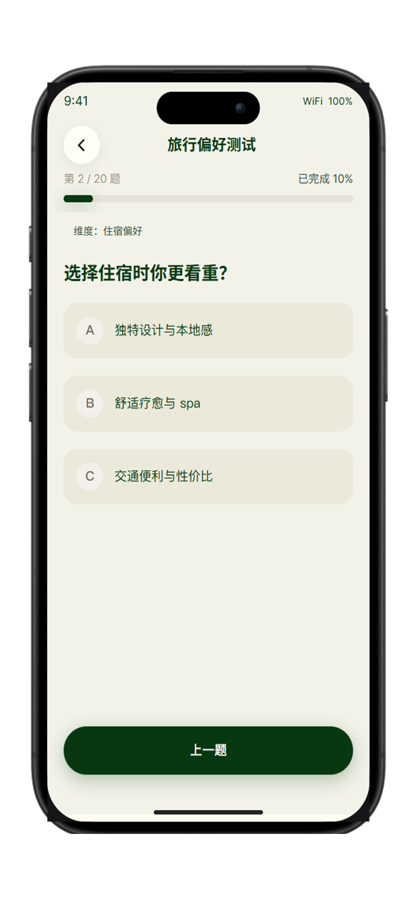
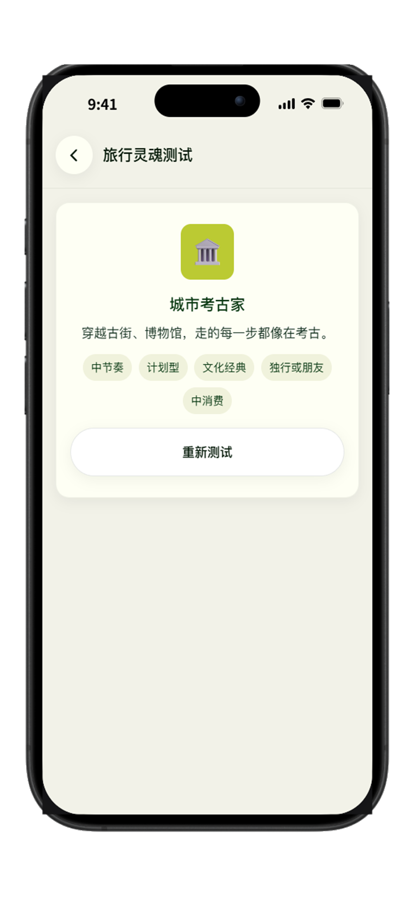
测试中生成 16 种旅行人格——如城市考古家（文化经典/计划型）、出片收集员（视觉导向/探索型）、胃袋探险家（饮食中心/松弛型）、安稳旅行家（舒适导向/规划型）等，路线与标签共同参与不同人格的个性化定制。
从首页选择规划方式，到 AI 生成个性化路线、地图查看、手动编辑调整，再到最终保存行程的全流程演示。
从首页进入规划选择，AI 对话梳理需求或直接填写旅行信息，系统自动生成每日路线并通过地图验证点位关系，最后支持 AI 优化或手动编辑保存为最终行程。视频时长约 3 分钟。
在同一目的地与相同时长下，仅改变旅行人格与偏好输入，观察 AI 生成结果是否真正体现用户差异。
文化经典 / 计划型
优先外滩、上海博物馆、豫园等文化经典，每天 2-3 个核心点，步行量适中，午间可休息。外滩夜景选择傍晚蓝调时段拍摄。
视觉导向 / 探索型
优先黄金/蓝调时段，D1 经典天际线（外滩日落夜景），D2 街区光影（武康路-安福路-豫园），D3 高空滨水（上海中心-滨江）。
饮食中心 / 松弛型
每日以美食节点为骨架，D1 外滩夜景与豫园老字号，D2 武康路文艺街区与田子坊，D3 老城厢市井与甜品收尾。全程地铁+短途步行。
舒适导向 / 规划型
每日 2-3 个点，预留午休，避免长步行。外滩夜景必去，上海博物馆预约免排队，豫园和武康路经典且设施友好。
| 评价项 | 城市考古家 | 出片收集员 | 胃袋探险家 | 安稳旅行家 |
|---|---|---|---|---|
| 偏好匹配度 1-5 | 4 | 4 | 4 | 4 |
| 节奏符合度 1-5 | 4 | 4 | 3 | 4 |
| 路线合理性 1-5 | 4 | 3 | 3 | 3 |
| 推荐理由是否体现偏好 | 文化路线明确 | 光影与拍摄节点突出 | 美食节点丰富 | 景点少、休息与交通提醒 |
| 主要问题 | 部分热门景点混入 | D2 跨区跳转需优化 | 节点过密 | 步行与换乘约束不够 |